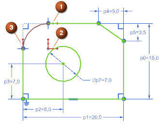

自由度箭头
自由度(DOF)箭头  将标记草图上可自由移动的点。自由度有三种类型：定位自由度、转动自由度以及径向自由度。这个示例显示定位约束：
将标记草图上可自由移动的点。自由度有三种类型：定位自由度、转动自由度以及径向自由度。这个示例显示定位约束：
|
 |
|
当将一个点约束为在给定方向上移动时，NX 会移除 DOF 箭头。应用一个约束可以移除多个 DOF 箭头。当所有这些箭头都消失时，草图即已完全约束。
当您需要完全控制设计时，可完全约束草图。请注意，约束草图是可选的。您可以使用欠约束的草图来定义特征。